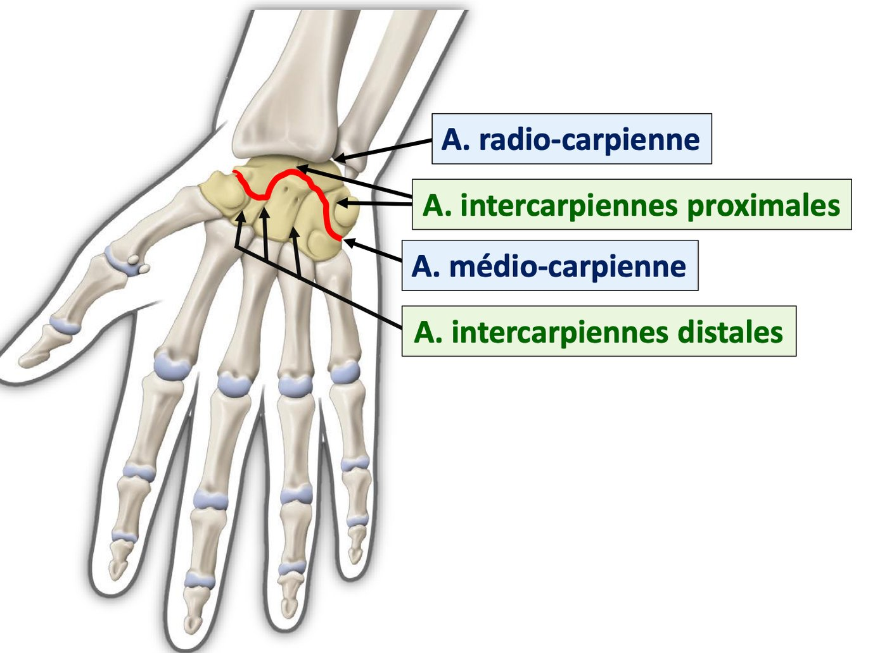
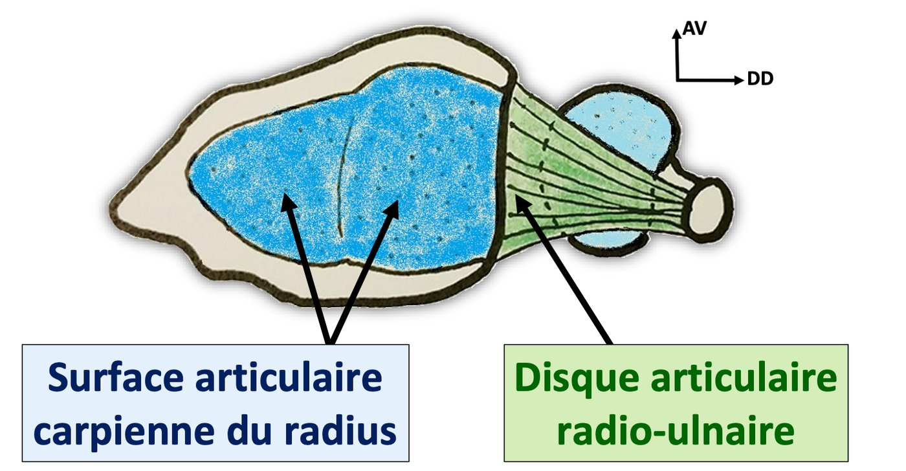
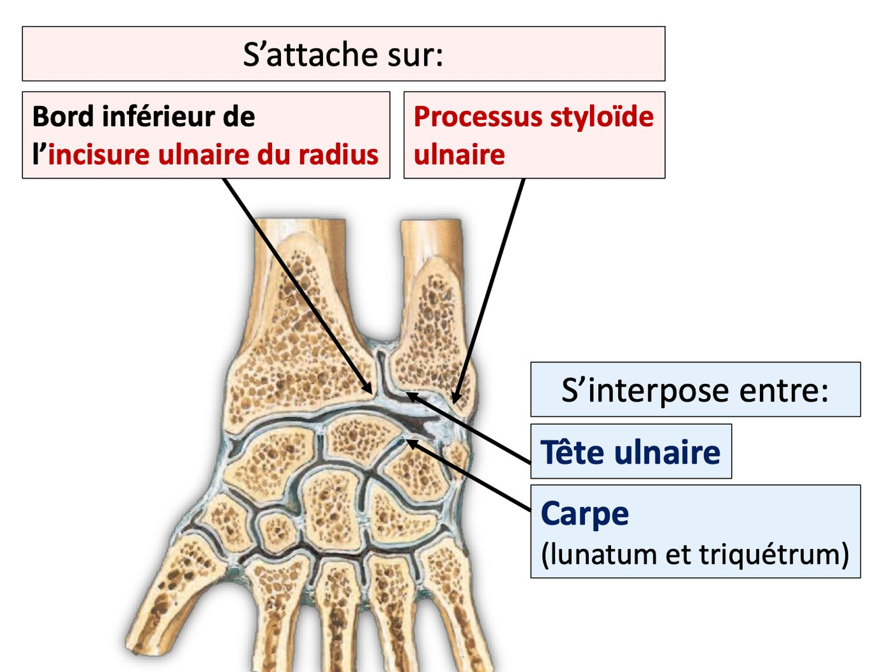
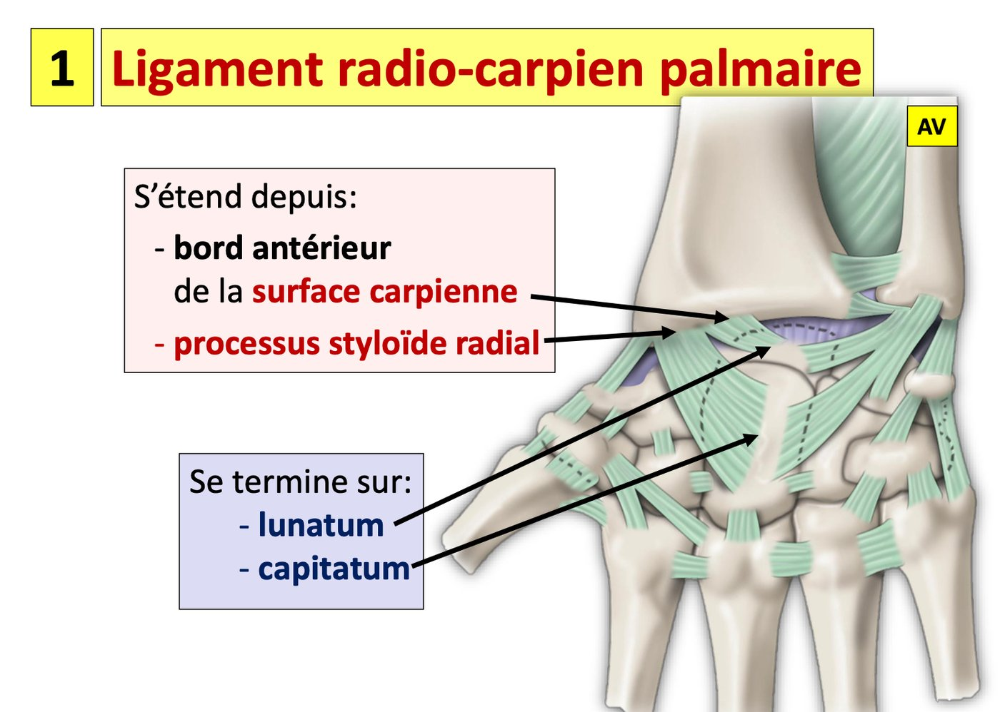
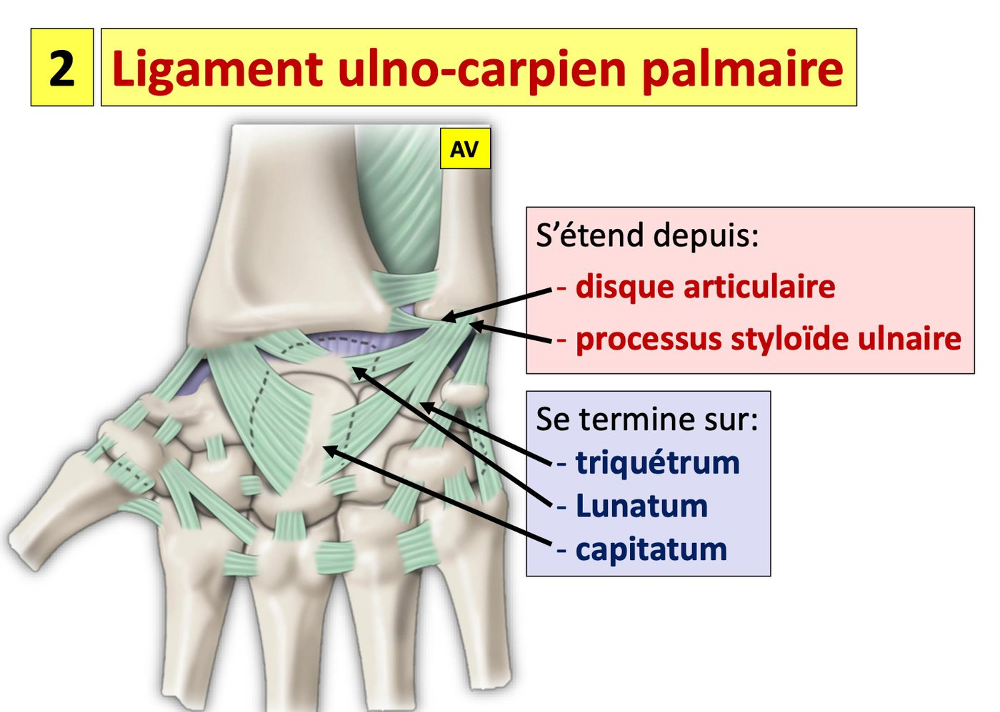
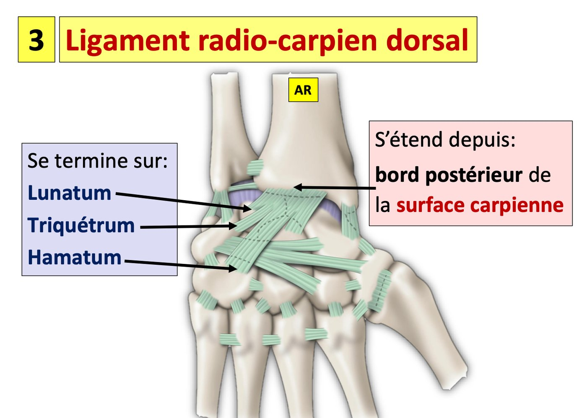

S1 · Anatomy · Summary
Hand joints and radiocarpal joint
- Essentials
- Joints of the hand
- Radiocarpal joint
- Articular surfaces
- Means of union
- Synovial
- Movements
- Exam traps
- Self-check
If you remember only this
- Wrist joints = radiocarpal + proximal intercarpal + mid-carpal + distal intercarpal (the distal radio-ulnar joint is not one of them).
- Radiocarpal joint = distal joint of the thoracic limb (carpus ↔ forearm), synovial ellipsoid type.
- Antebrachial surface: elliptical, concave, major transverse axis; = carpal surface of the radius (lateral 2/3: scaphoid part + lunate part) + radio-ulnar articular disc (medial 1/3).
- Disc: horizontal, triangular ligament covered with cartilage; attached to the lower edge of the radius's ulnar notch and to the ulnar styloid; between the ulnar head and the lunate/triquetrum. The capsule attaches to its anterior and posterior edges.
- Carpal surface: convex, larger; scaphoid + lunate + triquetrum + interosseous ligaments (not the pisiform).
- Ligament endings: palmar radiocarpal → lunate, capitate; palmar ulnocarpal → triquetrum, lunate, capitate; dorsal radiocarpal → lunate, triquetrum, hamate; radial collateral → scaphoid; ulnar collateral → pisiform, triquetrum.
- Flexion 50°, extension 35°, abduction (radial tilt) 5°, adduction (ulnar tilt) 15°.
Introduction — the joints of the hand p. 1 2025-26
| Class | Joints |
|---|---|
| a. Wrist | Radiocarpal · proximal intercarpal · mid-carpal · distal intercarpal |
| b. Carpometacarpal | Carpometacarpal joint of the thumb · carpometacarpal joints II–V |
| c. Finger | Metacarpophalangeal · interphalangeal |
Together they allow flexion, extension, adduction, abduction and circumduction of the hand and fingers.

1. Radiocarpal joint — definition p. 2
Radiocarpal joint
The distal joint of the thoracic limb; unites the carpus to the forearm. A synovial joint (diarthrosis) of the ellipsoid type.
2. Articular surfaces (2) p. 2 2023-24 · 2024-25 · 2025-26
a. Antebrachial (forearm) articular surface 🎯
Elliptical, concave, with a major transverse axis. Two parts:
| Part | Share | Description |
|---|---|---|
| Carpal articular surface of the radius | Lateral 2/3 | 2 parts: lateral, triangular → scaphoid; medial, quadrilateral → lunate |
| Radio-ulnar articular disc 🎯 | Medial 1/3 | Horizontal, triangular ligament covered with cartilage. Attached to the lower edge of the ulnar notch of the radius and to the ulnar styloid process. Lies between the ulnar head and the carpus (lunate and triquetrum) |


b. Radial articular surface of the carpus
- Convex, larger than the antebrachial surface.
- Formed by the radial surfaces of the scaphoid, lunate and triquetrum, united by the carpal interosseous ligaments.
Which surface is which shape?
Forearm side = concave; carpal side = convex. The carpal side has 3 bones (scaphoid, lunate, triquetrum) — the pisiform is not part of it.
3. Means of union p. 2–3 2024-25 · 2025-26
a. Joint capsule
Fibrous sleeve around the joint; attaches to the periphery of the articular surfaces and to the anterior and posterior edges of the articular disc.
b. Passive ligaments (5)
| Ligament | From | To |
|---|---|---|
| Palmar radiocarpal | Anterior edge of the carpal surface + radial styloid | Lunate, capitate |
| Palmar ulnocarpal | Articular disc + ulnar styloid | Triquetrum, lunate, capitate |
| Dorsal radiocarpal | Posterior edge of the carpal surface | Lunate, triquetrum, hamate |
| Radial collateral of the carpus | Radial styloid | Scaphoid |
| Ulnar collateral of the carpus | Ulnar styloid | Pisiform, triquetrum |
Memory trick
The lunate gets 3 ligaments (both palmar + the dorsal), the capitate gets the 2 palmar ones; collaterals each go to one side of the carpus
(radial → scaphoid, ulnar → pisiform + triquetrum).



c. Active ligaments — tendons of 6 main muscles
Front
Flexor carpi radialis · flexor carpi ulnaris · palmaris longus
Back
Extensor carpi ulnaris · extensor carpi radialis longus · extensor carpi radialis brevis
4. Synovial membrane p. 3
- Gliding membrane lining the deep face of the capsule; attaches at the boundary of the antebrachial and carpal articular surfaces.
- Synovial cyst: rounded swelling, prominent in flexion, disappears in extension; synovial extensions slipping between capsular and ligament fibres.
5. Functional anatomy p. 3
| Axis | Movement | Definition | Range |
|---|---|---|---|
| Transverse | Flexion | Palm toward the front of the forearm | 50° |
| Extension | Back of the hand toward the back of the forearm | 35° | |
| Sagittal | Abduction (radial tilt) | Hand tilts to the radial side | 5° |
| Adduction (ulnar tilt) | Hand tilts to the ulnar side | 15° |
Circumduction: circular summation movement drawing a cone, passing from one to the other of the 4 movements above.
Exam traps
False statements to recognise
- The disc "occupies the medial 2/3" or "the lateral third", "is interposed between ulna and radius", "articulates with the triquetrum and pisiform" — false: medial 1/3, between the ulnar head and the lunate/triquetrum. 2 years
- The disc "attaches laterally to the ulnar styloid" — false per the 2024-25 key. 2024-25
- The antebrachial surface "is convex", "is divided into 1/3 lateral and 2/3 medial", "articulates with the four bones of the proximal row" — false. 2025-26
- "The distal radio-ulnar joint is a wrist joint" — false. 2025-26
- Ligaments ending on the capitate: only the two palmar ones (not the dorsal radiocarpal, not the collaterals). 2024-25
- Ligaments ending on the lunate: palmar radiocarpal, palmar ulnocarpal, dorsal radiocarpal — not the collaterals. 2025-26
Self-check
List the 3 classes of hand joints and the joints in each.
Wrist: radiocarpal, proximal intercarpal, mid-carpal, distal intercarpal. Carpometacarpal: thumb, II–V. Fingers: metacarpophalangeal, interphalangeal.
Define the radiocarpal joint and give its type.
Distal joint of the thoracic limb uniting carpus and forearm; synovial ellipsoid.
Describe the antebrachial articular surface.
Elliptical, concave, major transverse axis; carpal surface of the radius (lateral 2/3: triangular scaphoid part, quadrilateral lunate part) + articular
disc (medial 1/3).
Describe the radio-ulnar articular disc.
Horizontal triangular ligament covered with cartilage, attached to the lower edge of the radius's ulnar notch and the ulnar styloid, between the ulnar head
and the lunate/triquetrum.
What forms the carpal articular surface?
Radial surfaces of scaphoid, lunate, triquetrum + carpal interosseous ligaments; convex and larger than the forearm surface.
Where does the capsule attach?
Periphery of the articular surfaces + anterior and posterior edges of the disc.
Give origin and endings of the 5 passive ligaments.
Palmar radiocarpal: radius → lunate, capitate. Palmar ulnocarpal: disc + ulnar styloid → triquetrum, lunate, capitate. Dorsal radiocarpal: posterior radius
→ lunate, triquetrum, hamate. Radial collateral: radial styloid → scaphoid. Ulnar collateral: ulnar styloid → pisiform, triquetrum.
Which 6 tendons are the active ligaments?
Flexor carpi radialis, flexor carpi ulnaris, palmaris longus, extensor carpi ulnaris, extensor carpi radialis longus and brevis.
What is a synovial cyst of the wrist?
Rounded swelling, prominent in flexion, gone in extension, from synovial extensions slipping between capsular and ligament fibres.
Ranges of the 4 wrist movements and their axes?
Transverse axis: flexion 50°, extension 35°. Sagittal axis: abduction (radial tilt) 5°, adduction (ulnar tilt) 15°.